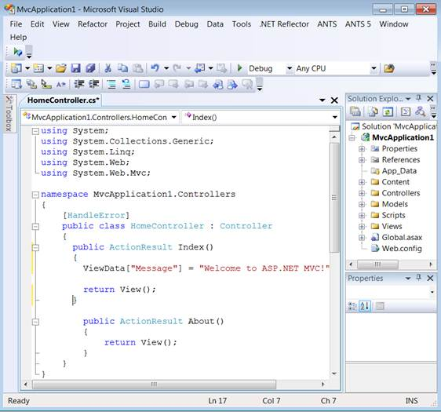

1. Create a model in the application (Refer to GettingStarted >Adding a Model to the Application)
2. Add the following code in the Index.cshtml file, to create the Grid control in the view:
|
[cshtml]
@(new HtmlString(Html.Syncfusion().Grid<MvcSampleApplication.Models.Order>("FlatGrid","GridModel", column =>{ column.Add(c => c.OrderID).HeaderText("Order ID"); column.Add(c => c.CustomerID).HeaderText("Customer ID"); column.Add(c => c.EmployeeID).HeaderText("Employee ID"); column.Add(c => c.OrderDate).HeaderText("Order Date").Format("{OrderDate:dd/mm/yyyy}"); column.Add(c => c.Freight).HeaderText("Freight");
}).ToString()))
|
 Note: This is of the type: string
HTMLHelper.Grid<T>(string control_id, GridPropertiesModel gridModel,
Action<IRootGridColumnBuilder<T>>columns); where T: class
Note: This is of the type: string
HTMLHelper.Grid<T>(string control_id, GridPropertiesModel gridModel,
Action<IRootGridColumnBuilder<T>>columns); where T: class
It is important that the control_id used in the Index.cshtml file and in the HomeController.cs file should match to ensure the binding of the properties to the control.
3. Double-click the HomeController.cs in the Controller/Home folder.
The HomeController.cs page is displayed in the main window.

Figure 58: HomeController.cs Page
4. Edit the Index method as like below:
|
[C#]
/// <summary> /// Used to bind the Grid. /// </summary> /// <returns>Veiw page, it displays the Grid</returns> public ActionResult Index() { GridPropertiesModel<Order> model = new GridPropertiesModel<Order>() { DataSource = new NorthwindDataContext().Orders.Take(200), AllowPaging = true, AllowSorting = true }; ViewData["GridModel"] = model; return View(); } |
Code details:
a. Object created for GridPropertiesModel and the following grid properties are assigned to model
· DataSource—Gets or sets a data source for the Grid control.
· AllowPaging—Gets or sets a value indicating whether the paging feature is enabled.
· AllowSorting—Gets or sets a value indicating whether the sorting feature is enabled.
b. Pass the model to the view using ViewData. This will pass the grid properties from the controller to the view.
Syntax:
ViewData["model_id"] = object_name;
5. In order to work with paging and sorting actions, create a post method for Index actions and update the following code in this method.
|
[C#]
/// <summary> /// Paging/sorting requests are mapped to this method. This method invokes the HtmlActionResult /// from the grid. The required response is generated. /// </summary> /// <param name="args">Contains paging properties </param> /// <returns> /// HtmlActionResult returns the data displayed on the grid. /// </returns> [AcceptVerbs(HttpVerbs.Post)] public ActionResult Index(PagingParams args) { IEnumerable data = new NorthwindDataContext().Orders.Take(200); return data.GridActions<Order>(); } |
Note: Essential Grid is fully AJAX enabled. For
paging/sorting/filtering/editing actions the entire page will not be refreshed.
The grid contents alone refresh using AJAX calls. The methods above are
necessary to achieve the grid actions.
Code details:
a. Get the data source and store it in a IEnumeable collection.
b. Call the GridAction helper with the Type of Model which invokes the custom action result. This will process the data source and return the required response while calling paging and sorting actions.
6. Run the application.
Figure 59: Grid Control Added to the Application
A sample which demonstrates a basic Grid control can be downloaded from the following link.
Note: The version number for the assemblies has
been set to 9.2.0.137 in the Web.config file of the attached sample. Please
change the version number to the appropriate version in the (available in
the root directory) Web.config file.